{kind=link}
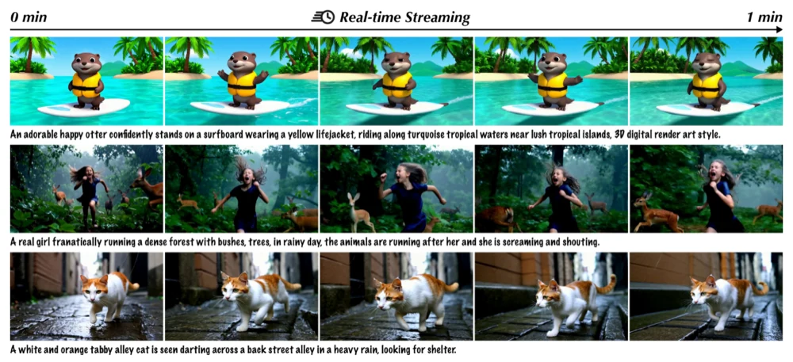
Shuwei Shi
I am currently a third-year Ph.D. student at the Graduate School of Information Science and Technology (IST), The University of Tokyo supervised by Prof. Yinqiang Zheng. Prior to this, I obtained my M.Sc. degree at the IIG group in Shenzhen International Graduate School, Tsinghua University, supervised by Prof. Yujiu Yang. I was also a research assistant in XPixel Group supervised by Prof. Chao Dong and Prof. Yu Qiao.
My research focuses on visual content generation and long video generation driven world models. I am also interested in unified multimodal generation and understanding, as well as post-training techniques, including distillation and reinforcement learning. Before that, I mainly worked on low-level vision tasks, including image/video restoration and quality assessment.
I am looking for full-time positions after summer 2027. Please send me an email if you are interested!
Honors and Awards
- The University of Tokyo Fellowship (Todai Fellowship), Sep. 2023
- Outstanding Graduate of Tsinghua University (81/5000), Jul. 2023
- Outstanding Master Thesis of Tsinghua University, Jul. 2023
- National Scholarship, Tsinghua University, 2022
- Winner of NTIRE Perceptual Image Quality Assessment Challenge: Track 1 Full-Reference and Track 2 No-Reference at CVPR, 2022
- National Scholarship, 2018
Publications
* Equal contribution, ‡ Project lead
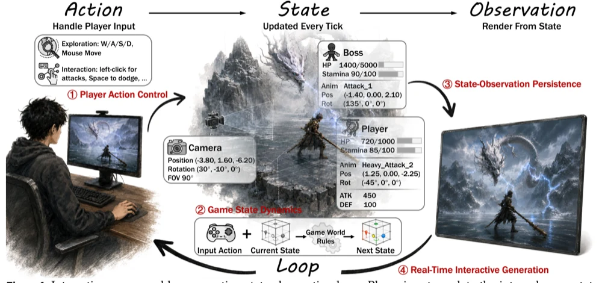
From Pixels to States: Rethinking Interactive World Models as Game Engines.
ECCV Wrokshop AIW, 2026
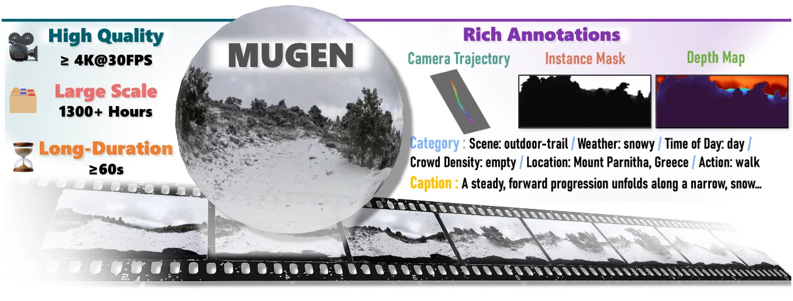
Interactive Panoramic World Exploration via Camera Control.
SIGGRAPH Asia, 2026
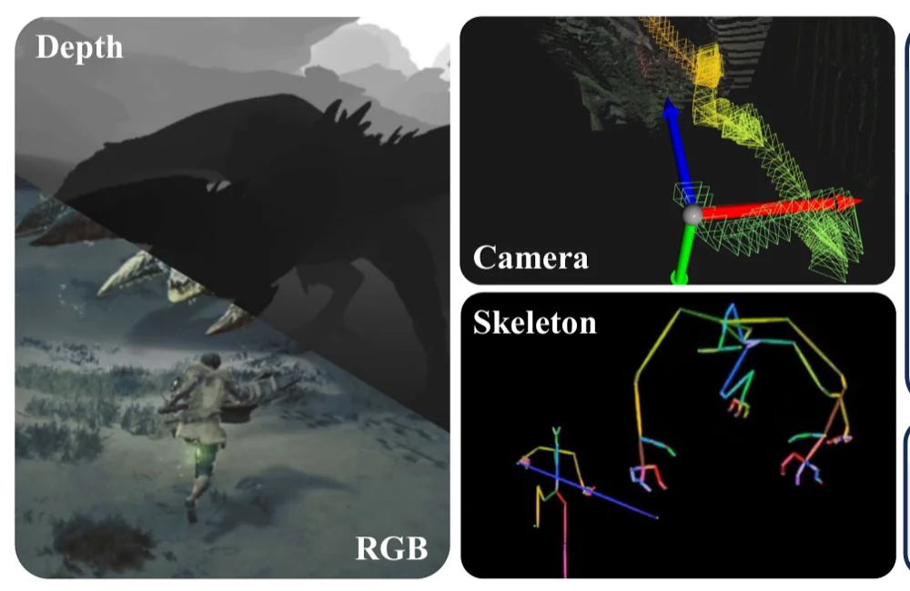
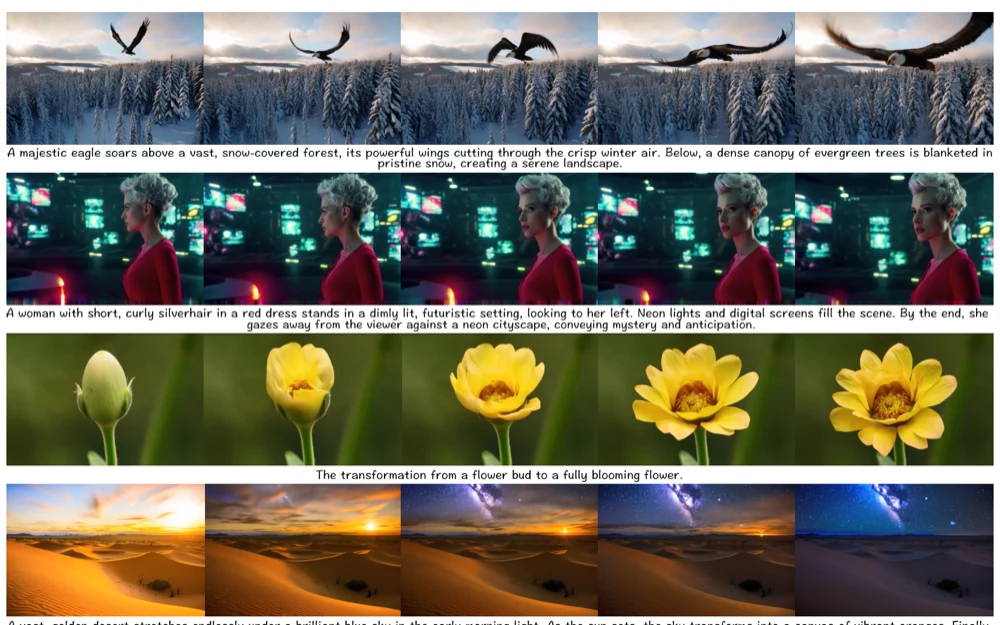
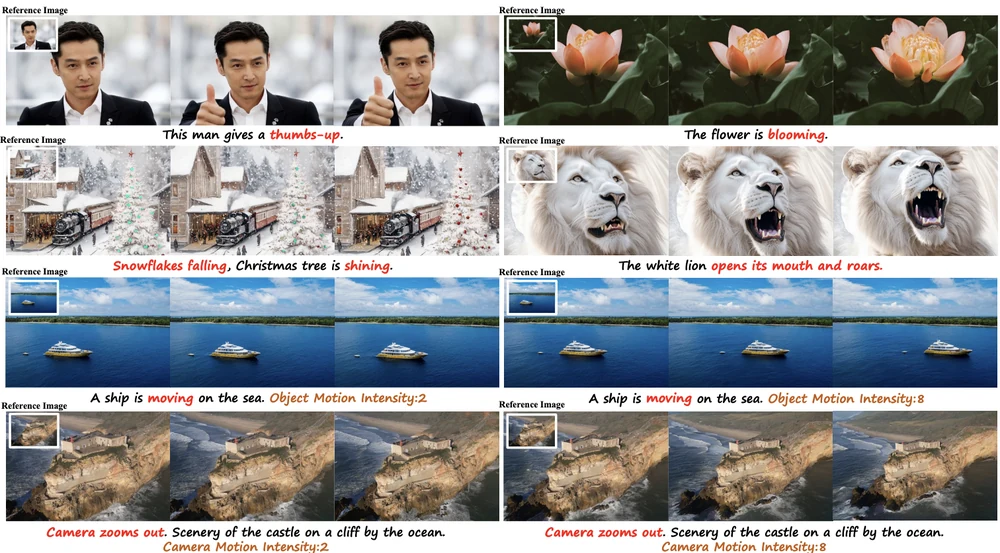
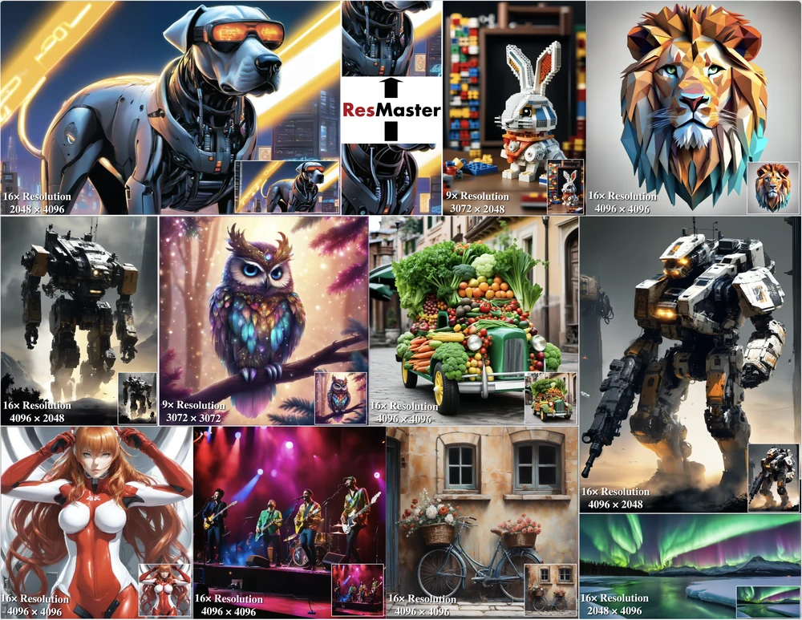
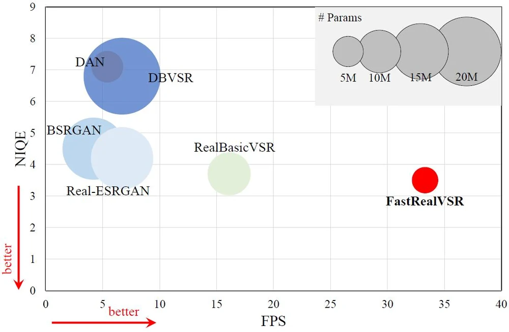
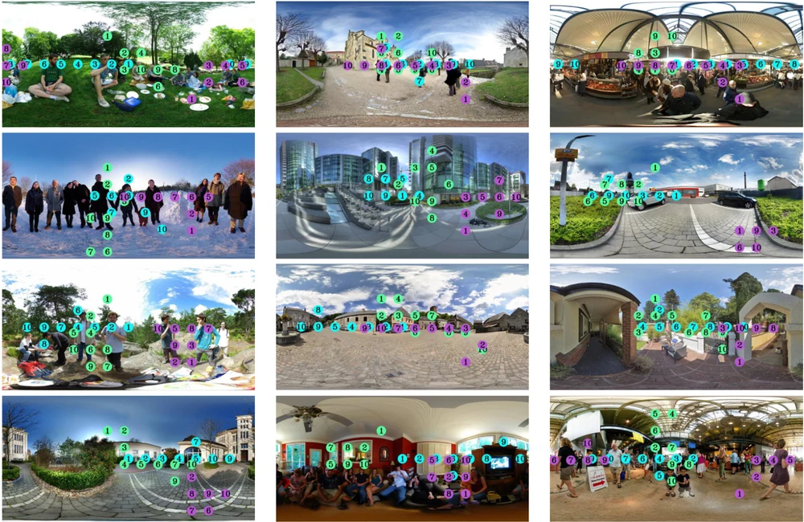
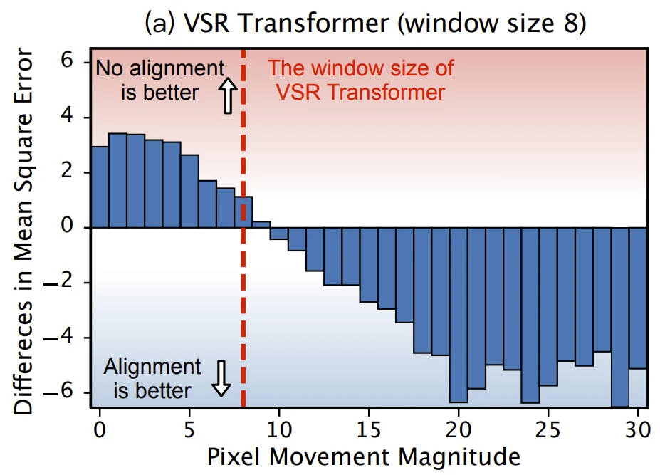
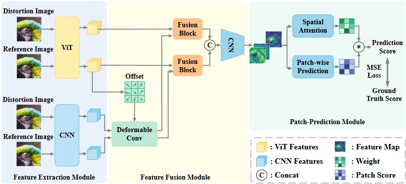
Attentions Help CNNs See Better: Attention-based Hybrid Image Quality Assessment Network.
Winner of NTIRE 2022 Perceptual Image Quality Assessment: Track 1 Full-Reference Challenge
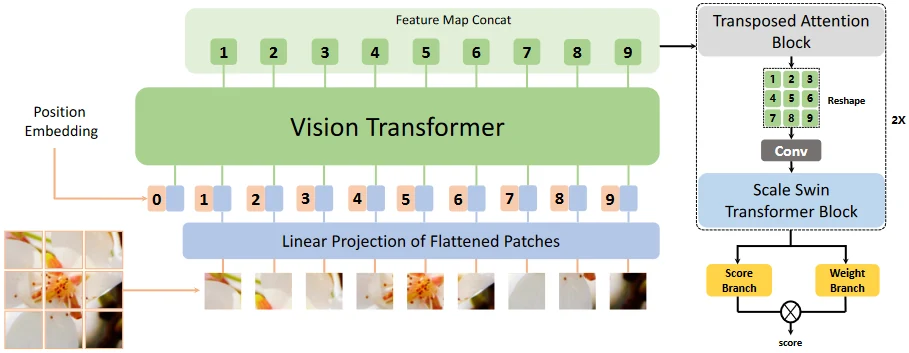
MANIQA: Multi-dimension Attention Network for No-Reference Image Quality Assessment.
Winner of NTIRE 2022 Perceptual Image Quality Assessment: Track 2 No-Reference Challenge
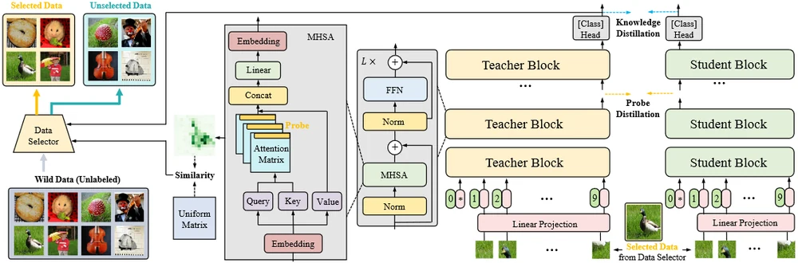
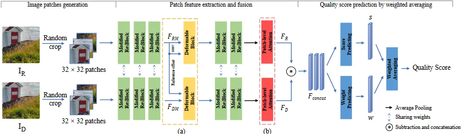
Academic Service
Conferences: AAAI, CVPR, ICCV, NeurIPS, ECCV
Journals: IJCV, TCSVT